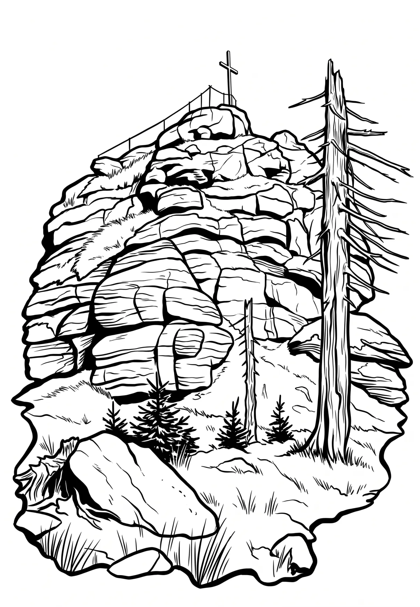

Jizera
Liberecký kraj · 1122 m n. m.

přírodní památka · #089
Jizera (německy Siechhübel) je se svými 1122 m n. m. druhá nejvyšší hora české části Jizerských hor a také nejvyšší vrchol Hejnického hřebene a celé Jizerské hornatiny. Zároveň je horou s nejvyšší prominencí (převýšením od sedla) ze všech tisícovek v české části hor.